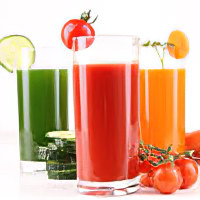

Как похудеть на -3кг за 3 дня
Диета моделей «2-4 кг за 3 дня»
Срок: 3 дней. Результат: -3 кг. Суть: если нужно экстренно похудеть, модели пользуются
диетой, рассчитанной на 3 дня. За это время можно сбросить до 4 кг лишнего веса. Самое
главное правило диеты - кушать нужно не позднее, чем за 3 часа до сна.
6 вариантов разгрузочных диет на 3 дня
Срок: 3 дня. Результат: -3 кг. Суть: трехдневная разгрузочная диета предполагает каждый день
менять свой рацион. Это значит, что человек будет питаться различными продуктами. В данной
статье представлены 6 вариантов разгрузочных дней.
Диета на свежевыжатых соках

Срок: 1-7 дней. Результат: -1-4 кг. Суть: натуропат Чери Калбом является «прародительницей»
соковой диеты. Она уверена, что эти напитки обладают целебными свойствами. Чери разработала
соковую диету, которая не просто помогает худеть, но и приводить кожу в порядок.
Диета на вареных овощах
Срок: от 3 дней. Результат: от -3 кг. Суть: диета на вареных овощах – это одна из наиболее
популярных методик избавления от лишнего веса. Но долго на ней находиться не стоит, так как
организм человека нуждается не только в углеводах, но и животном белке.
Банановая диета
Срок: 3 дня. Результат: -3 кг. Суть: Употребление бананов в пищу положительным образом
сказывается на состоянии здоровья человека. Они выступают в качестве источника железа,
кальция, фосфора, калия. Все эти микроэлементы способствуют поддержанию нормальной работы
сердца.